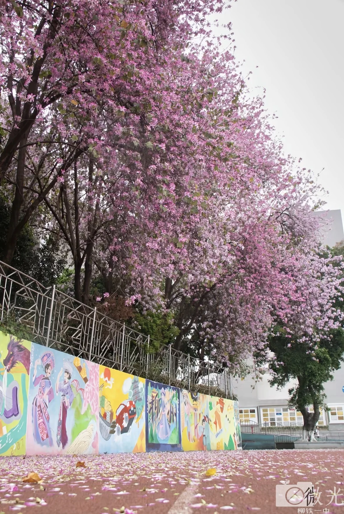
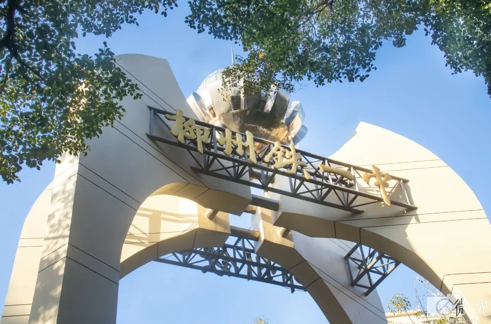
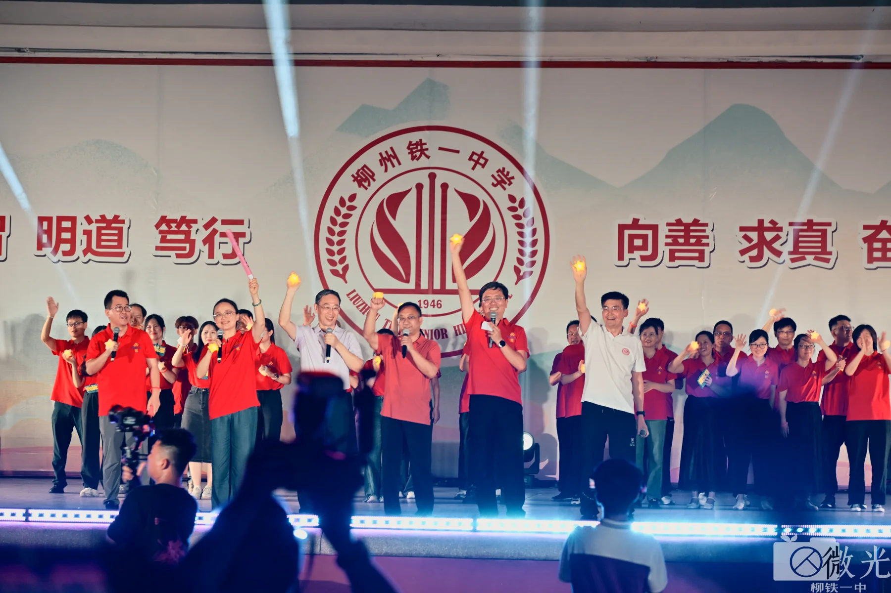
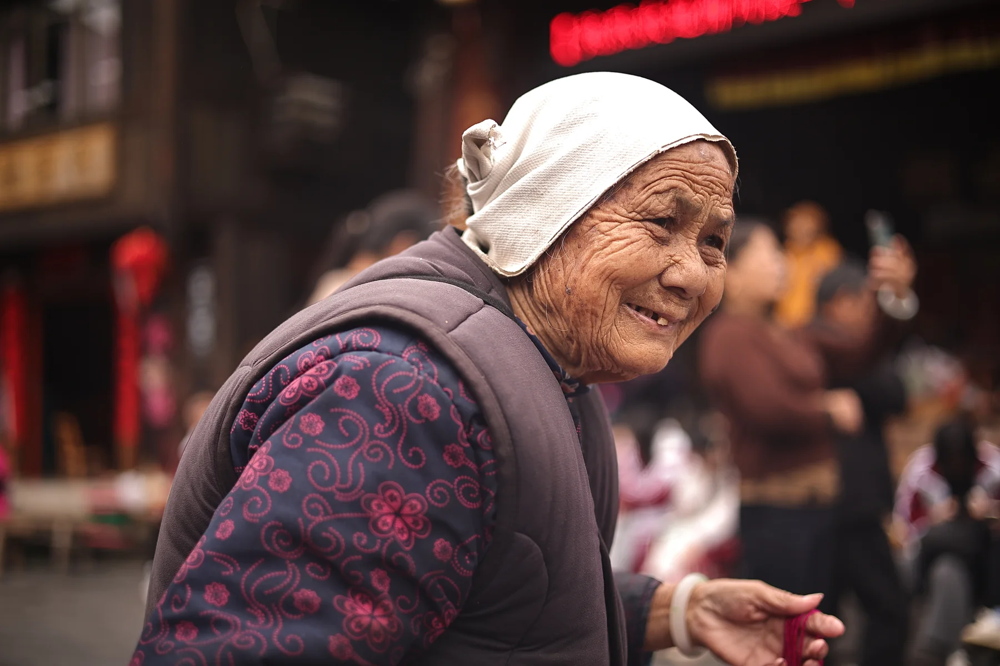
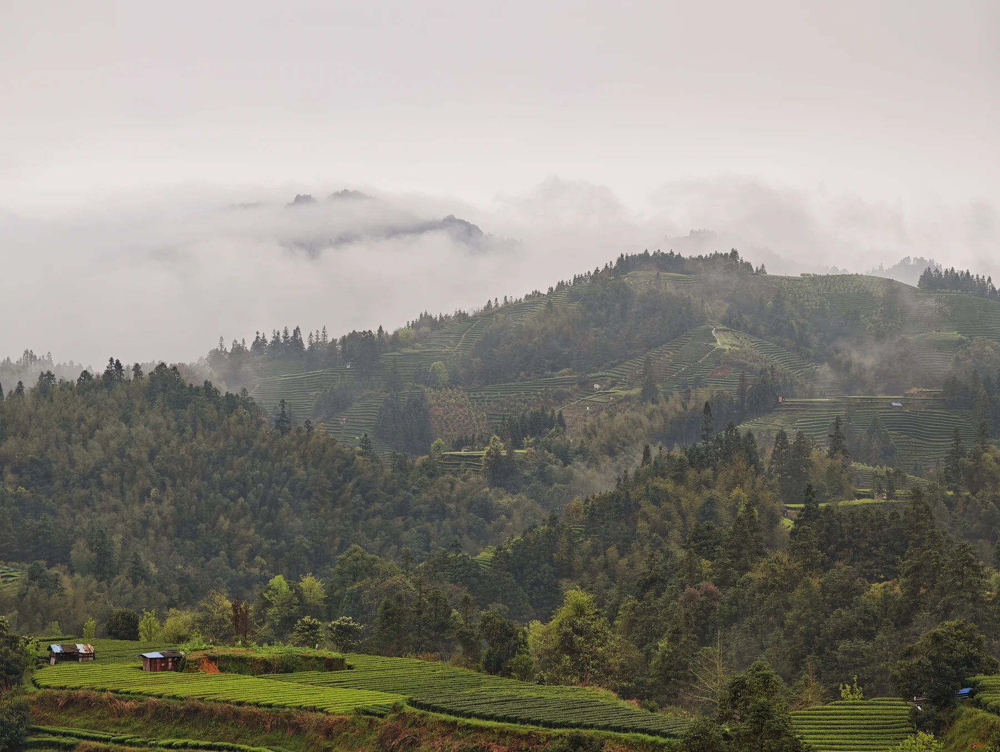

微光，源于我们的创作初心。世界的美好从不只存在宏大壮阔的景象，更多藏在细碎、温柔、容易被忽略的日常光影里。
我们相信，每一束微光皆有力量，每一个平凡瞬间都值得被认真定格、被温柔留存。
以微小之姿看世界
以虔诚之姿定光影

紫荆花道校园四季 · 03

记录四季更迭、晨昏晚霞、校园建筑、课间烟火、大型活动与青春百态，用镜头保存属于本校独有的校园记忆与少年模样。
奔赴城市街巷、自然山野、人间烟火，开展外拍采风、团队创作、人像纪实，拓宽视野，练习构图、光影、审美与镜头表达。
凤麒喊楼的夜、跑道上的冲刺、紫荆落满的花道 —— 这些瞬间一旦过去就不会重来， 所以我们要把它留在画面里。
我们奔赴城市街巷、自然山野、人间烟火，用一次次外拍把课堂上的构图、光影、色彩变成手感。
玉武三江的侗寨、云雾里的梯田、赶集的人与采茶的少年 —— 走得更远，镜头里才会有更多故事。

苗家阿婆玉武三江 · 人文纪实
我们坚持真诚记录、纯粹创作，拒绝搬运、敷衍与模板化创作。 社团长期产出原创校园文创、主题影像合集与校园纪实作品，打造专属于本校的影像资料库与青春影像存档。